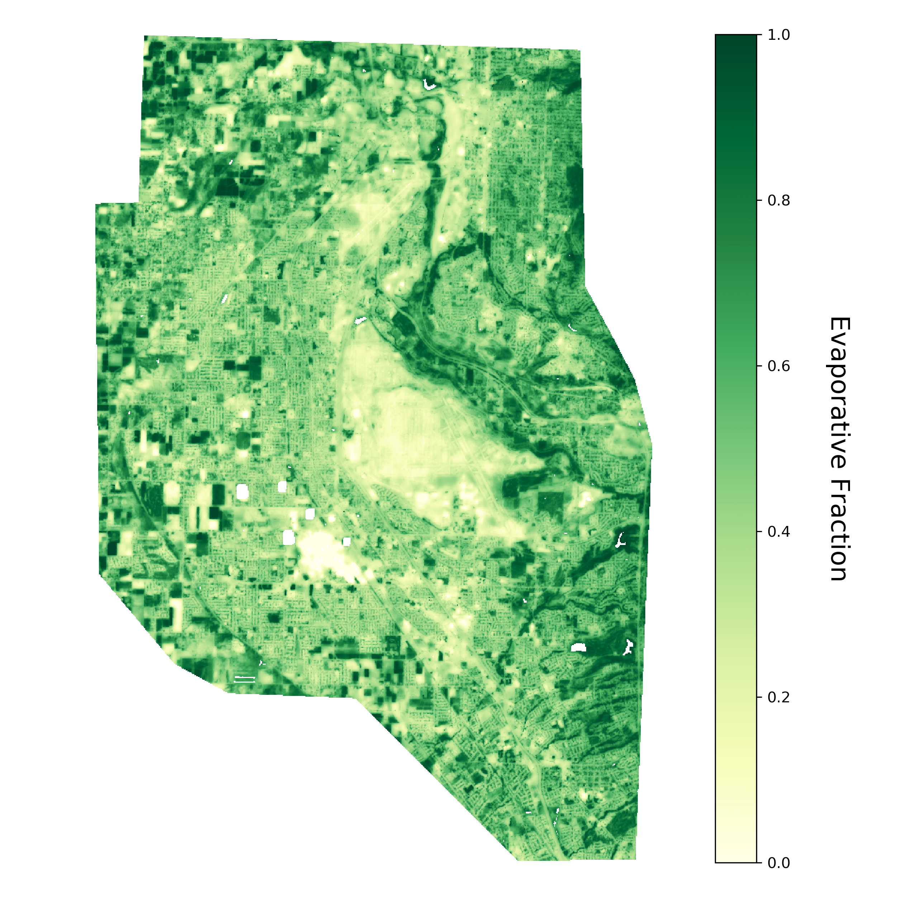

Research
Evapotranspiration and Energy Balance of Irrigated Turfgrass
Utah has the second highest per-capita domestic water usage in the United States, the majority of which is expended for outdoor irrigation. It also has population expected to double in the next 50 years. With a majority of that growth happening in urban areas, it’s important to understand how much water is being used by urban landscapes in order to plan and manage future water resources.
In this project we’re investigating water use of large urban turfgrass surfaces, such as golf courses and parks. We are taking eddy covariance and energy balance measurements in a golf course in a northern Utah suburb during the 2016-2018 growing seasons. Sensible and latent heat fluxes are then calculated from these measurements.
We’re currently using this dataset to test a simple remote sensing model of evapotranspiration, with plans to test more robust models in the future. This dataset is also being used to diagnostically model evapotranspiration in order to better understand how water use of these surfaces change from growing season to growing season.